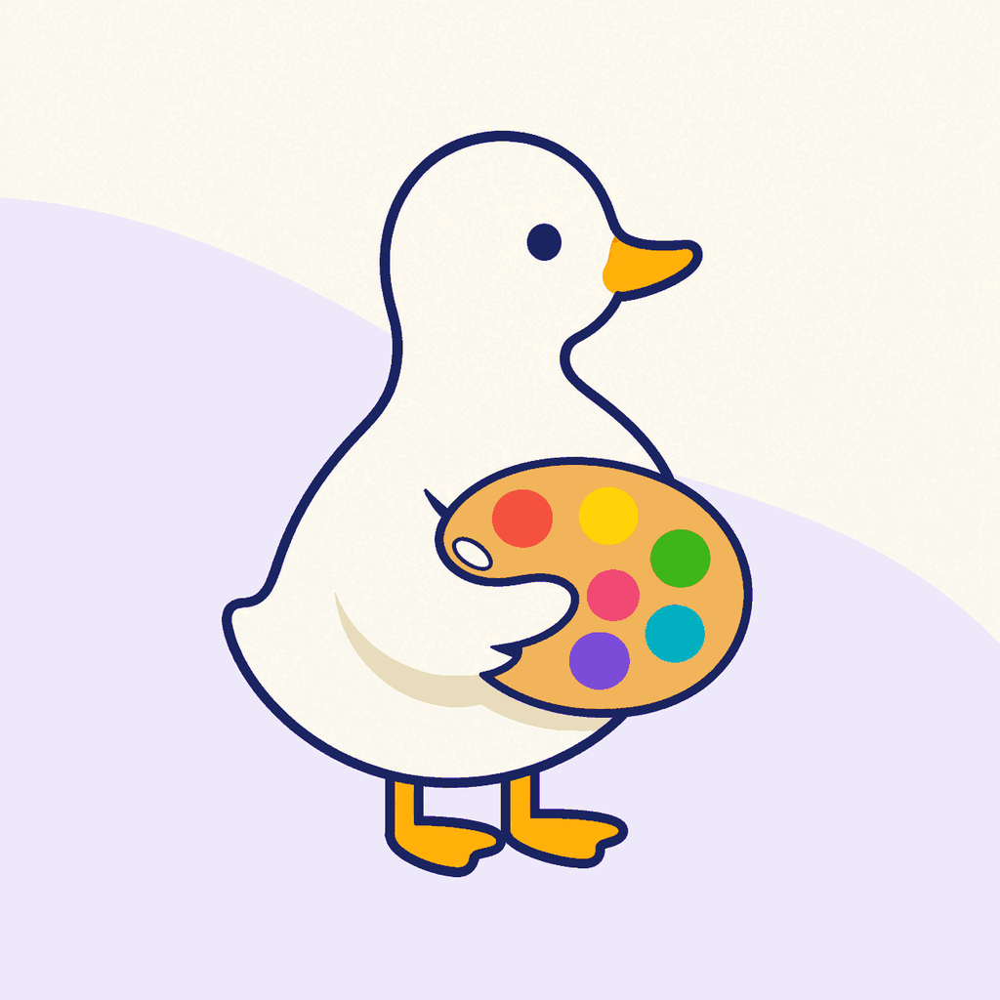

ColourTrainer
Help and Support
Need help with training, reminders, widgets, supporter access, or wallpapers? Start here or email Duck Code directly.
Before contacting support
- Install the newest available ColourTrainer build and iOS update supported by your device.
- Close and reopen the app after a display, notification, widget, or purchase-state change.
- Include your iPhone model, iOS version, ColourTrainer version, selected language, and clear reproduction steps.
- Screenshots are helpful, but remove personal information before sending them.
Exercises and colour appearance
Screen hardware, brightness, viewing angle, ambient light, glare, screen protectors, True Tone, Night Shift, Reduce White Point, Colour Filters, and other accessibility settings can change how a colour appears. ColourTrainer can explain known public settings but cannot detect every display or environmental condition.
If a challenge seems unfair or a name or translation seems wrong, use the report action in the feedback panel or email the challenge type, displayed values, language, and a screenshot. “I cannot tell” is always a valid answer in exercises that offer it.
Daily Challenge and reminders
Daily reminders are optional and scheduled locally. Open ColourTrainer Settings to enable or disable them and choose a preferred time. If reminders do not arrive, confirm that notification permission is enabled for ColourTrainer in iOS Settings and that the challenge was not already completed for that day.
Completing a Daily Challenge removes that day’s pending reminder. Replaying or replacing a result does not require notifications to be enabled.
Colour-of-the-Day widget
Add the ColourTrainer widget from the iOS Home Screen or Lock Screen widget gallery. If it does not refresh, open ColourTrainer once, confirm the app language, and then remove and add the widget again. Some Lock Screen tint modes cannot display a trustworthy reference swatch; in those modes the widget directs you to open the app for the full colour.
Supporter purchases
ColourTrainer offers three optional non-consumable supporter levels. They all provide the same benefits: the four daypart wallpaper sets and removal of the Home support prompt. Optional repeat tips do not change access and are not restorable.
All payments are handled by Apple. Never send payment details to Duck Code or pay outside the App Store purchase sheet.
Restore Purchases
- Open ColourTrainer Settings.
- Find the supporter card and choose Restore, or open the Support sheet and choose Restore Purchases.
- Use the Apple Account that made or shares the original non-consumable purchase.
- Allow the App Store a moment to refresh, then reopen ColourTrainer if necessary.
Family Sharing availability is determined by Apple and the family’s account configuration. A refund or revocation removes access unless another valid supporter entitlement remains. For billing, refunds, purchase history, or account problems, use Apple’s Report a Problem service or Apple Support.
Supporter wallpapers
Verified supporters can open the wallpaper gallery from Settings or Credits & Sources. Each daypart includes Lock Screen and Home Screen versions. Choose Share to save through another destination without Photos access, or choose Save to request add-only Photos permission.
If Photos access was denied, enable add-only access for ColourTrainer in iOS Settings or continue using Share. ColourTrainer cannot silently change the system wallpaper. The in-app guide explains how to create time-based Shortcuts automations or use Focus-linked Lock Screens.
Accessibility and translations
ColourTrainer supports Dynamic Type, VoiceOver descriptions, Reduce Motion, untimed answers, and an everyday-display path. Please report cropped text, inaccessible controls, uncomfortable motion, missing translations, or colour-family wording that is unnatural in your language.
Privacy and deletion
ColourTrainer has no account or developer cloud. Training information is stored locally. Read the complete ColourTrainer Privacy Policy for notification, StoreKit, Photos, sharing, retention, and deletion details.
Contact
Email duck_code_contact@proton.me. Support is provided in English or Portuguese where possible. Please allow reasonable time for a reply.